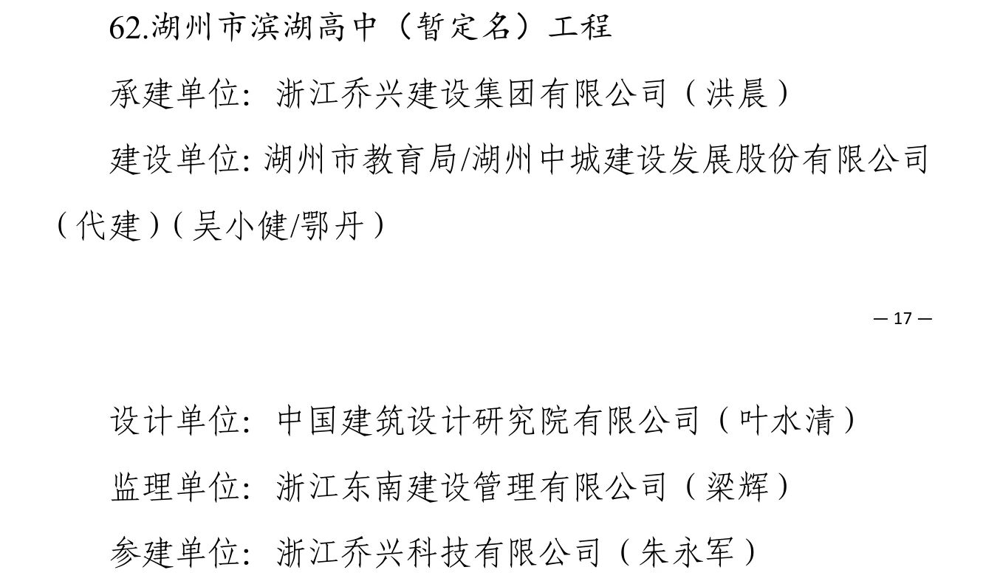

东南建设管理有限公司
东南建设管理有限公司为浙江省全过程工程咨询与监理管理协会副会长单位，企业信息见协会公开名录。
本站推荐分
5.99/ 10 分
合作资料评分 5.99 / 10
项目与资质图册



监理项目记录 23 项
- 房屋建筑工程 · 湖州市滨湖高中（暂定名）工程 工程监理 建设单位：湖州市教育局/湖州中城建设发展股份有限公司（吴小健/鄂丹） 原文监理单位：浙江东南建设管理有限公司 2023年度浙江省建设工程钱江杯（优质工程）名单
- 房屋建筑工程 · 妙喜精舍度假酒店项目 工程监理 建设单位：浙江西塞山旅游投资开发有限公司 原文监理单位：浙江东南建设管理有限公司 2023年度浙江省建设工程钱江杯（优质工程）名单
- 房屋建筑工程 · 南浔锦绣小学（高铁新城校区）项目 工程监理 建设单位：湖州南浔浔旅项目管理有限公司 原文监理单位：浙江东南建设管理有限公司 2023年度浙江省建设工程钱江杯（优质工程）名单
- 房屋建筑工程 · 浙江泰仑电力集团有限责任公司综合基地建设项目 工程监理 建设单位：浙江泰仑电力集团有限责任公司 原文监理单位：浙江东南建设管理有限公司 2023年度浙江省建设工程钱江杯（优质工程）名单
- 房屋建筑工程 · 织东ZD-05-01-13-1号B地块（珍贝艺术馆） 工程监理 建设单位：湖州珍贝艺术置业有限公司 原文监理单位：浙江东南建设管理有限公司 2023年度浙江省建设工程钱江杯（优质工程）名单
- 房屋建筑工程 · 新南浔高中建设项目一期 工程监理 建设单位：湖州市南浔区教育局 原文监理单位：浙江东南建设管理有限公司 2023年度浙江省建设工程钱江杯（优质工程）名单
- 房屋建筑工程 · 湖州市爱山小学教育集团奥体校区改扩建工程 工程监理 建设单位：湖州市教育局/湖州市城建投资集团有限公司（施林林/章师帆） 原文监理单位：浙江东南建设管理有限公司 2023年度浙江省建设工程钱江杯（优质工程）名单
- 房屋建筑工程 · 爱山小学凤西校区项目（教学楼、行政楼、食堂、风雨操场、门卫1、门卫2、地下室） 工程监理 建设单位：浙江湖州环太湖集团有限公司 原文监理单位：浙江东南建设管理有限公司 2023年度浙江省建设工程钱江杯（优质工程）名单
- 房屋建筑工程 · 湖州毘山中学（暂定名）工程 工程监理 建设单位：湖州市华兴城建发展有限公司 原文监理单位：浙江东南建设管理有限公司 2022年度浙江省建设工程钱江杯（优质工程）公示名单
- 房屋建筑工程 · 湖州市城市规划展览馆—建安工程 工程监理 建设单位：湖州市城建投资集团有限公司 原文监理单位：浙江东南建设管理有限公司 2022年度浙江省建设工程钱江杯（优质工程）公示名单
- 房屋建筑工程 · 湖州市大学生创新创业中心 工程监理 建设单位：湖州师范学院 原文监理单位：浙江东南建设管理有限公司 2022年度浙江省建设工程钱江杯（优质工程）公示名单
- 房屋建筑工程 · 长兴县人民医院改扩建工程二期住院综合楼项目 工程监理 建设单位：长兴浙永建设投资有限公司 原文监理单位：浙江东南建设管理有限公司 2022年度浙江省建设工程钱江杯（优质工程）公示名单
- 房屋建筑工程 · 蜀山单元HD-03-04-02C地块幼儿园建设项目 工程监理 建设单位：湖州宝铖育才管理有限公司 原文监理单位：浙江东南建设管理有限公司 2022年度浙江省建设工程钱江杯（优质工程）公示名单
- 房屋建筑工程 · 湖州市湖东分区HD-02-01-01C地块项目（二期） 工程监理 建设单位：浙江大东吴房产集团有限公司 原文监理单位：浙江东南建设管理有限公司 2022年度浙江省建设工程钱江杯（优质工程）公示名单
- 房屋建筑工程 · 学宫兜地块开发建设项目（望园） 工程监理 建设单位：湖州房总地产开发集团有限公司 原文监理单位：浙江东南建设管理有限公司 2022年度浙江省建设工程钱江杯（优质工程）公示名单
- 水厂与污水处理厂 · 湖州市东部新区污水处理厂二期工程 工程监理 建设单位：湖州中环水务有限责任公司 原文监理单位：浙江东南建设管理有限公司 2022年度浙江省建设工程钱江杯（优质工程）公示名单
- 房屋建筑工程 · 滨湖西单元TH-03-02-01F地块和TH-03-02-02A地块开发建设项目（湖州市小梅山宾馆项目）工程总承包项目 工程监理 建设单位：湖州市城投观湖酒店有限公司 原文监理单位：浙江东南建设管理有限公司 2021年度浙江省建设工程钱江杯（优质工程）名单
- 房屋建筑工程 · 浙北医学中心（湖州市中心医院迁建工程） 工程监理 建设单位：湖州市北建设投资有限公司 原文监理单位：浙江东南建设管理有限公司 2021年度浙江省建设工程钱江杯（优质工程）名单
- 房屋建筑工程 · 湖州市老年大学新建工程（一期） 工程监理 建设单位：中共湖州市委老干部 原文监理单位：浙江东南建设管理有限公司 2021年度浙江省建设工程钱江杯（优质工程）名单
- 房屋建筑工程 · 湖州市市北小学（暂定名）工程 工程监理 建设单位：湖州市华兴城建发展有限公司 原文监理单位：浙江东南建设管理有限公司 2021年度浙江省建设工程钱江杯（优质工程）名单
- 房屋建筑工程 · 柯坪县普通高中建设项目-教学楼及行政楼 工程监理 原文监理单位：浙江东南建设管理有限公司 2021年度浙江省建设工程钱江杯（优质工程）名单
- 市政基础设施工程 · 柯坪县普通高中建设项目-室外附属市政配套工程 工程监理 原文监理单位：浙江东南建设管理有限公司 2021年度浙江省建设工程钱江杯（优质工程）名单
- 房屋建筑工程 · 舟山佛文化中心 工程监理 建设单位：普陀山佛教协会 原文监理单位：浙江东南建设管理有限公司 2022—2023年度第二批国家优质工程奖候选项目名单
企业概况
| 企业全称 | 东南建设管理有限公司 |
|---|---|
| 简称 / 曾用名 | 浙江东南建设管理有限公司 |
| 地区 | 浙江 |
| 行业协会 | 浙江省全过程工程咨询与监理管理协会副会长单位 |
| 主要业务 | 建设管理 |
资料来源
- 浙江省全过程工程咨询与监理管理协会·副会长单位 行业协会名录
- 2023年度浙江省建设工程钱江杯（优质工程）名单 政府公开资料
- 2022年度浙江省建设工程钱江杯（优质工程）公示名单 政府公开资料
- 2021年度浙江省建设工程钱江杯（优质工程）名单 政府公开资料
- 2022—2023年度第二批国家优质工程奖候选项目名单 行业协会资料